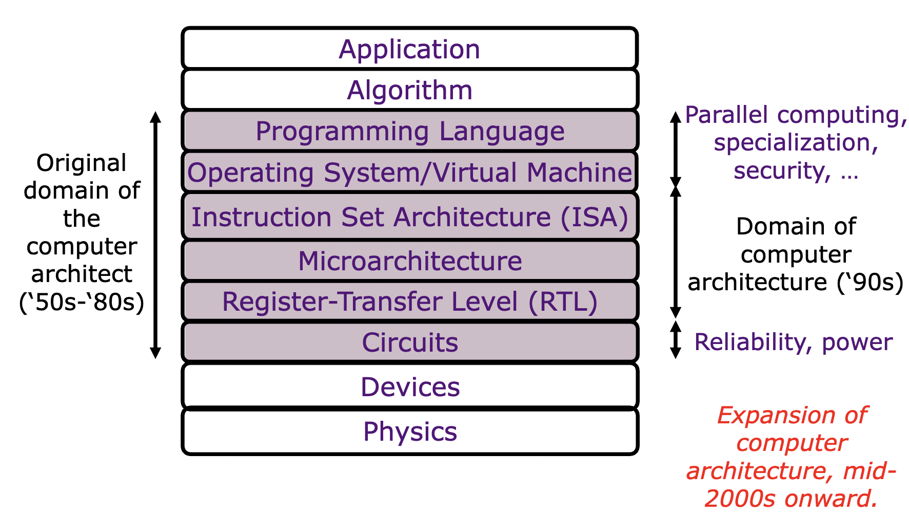
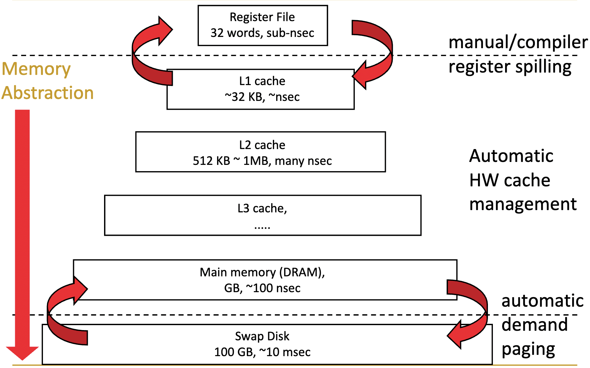

About Me
I’m a senior student self-learning computer science through the open courses based on the MIT 6-3 program. Stumbling all the time, I’ve learned from my mistakes and developed an interest in storage systems. Making things happen as a software engineer is exciting. Hopefully, I’ll be able to build something useful from scratch and make new friends some day.
There was a time that I began to question everything. With doubts I started my quest since the freshman year only to find out more questions await. For starters, online learning has a few disadvantages to real classes, no tutors to guide you through or ask questions and no peers to work for the same goal. Luckily, I got an Outreachy Internship this summer and mentors in the QEMU community have guided me through the whole journey. I do hope one day I can return their favor by participating further more in the open source projects.
My primary goal of life is to study the essential facts. And I believe that is the foundations of understanding this world. More specifically, I’d like to investigate more on storage systems and any other insteresting subject.
¶ocw

course plan:
¶math
¶Biology
¶IAP
¶Selective
¶HASS
已弃：
（对我）过理论的数学课比如数学分析OTLML方向暂时不打算学社会科学的书籍zzz生科的任何课尤其是实验perfection & procrastination
¶Storages
Computer architecture overview:
memory hierarchy:
Harvard Systems Programming and Machine Organization Course. Great system programming 101. I have taken it instead of traditional 15-213 because it has more open materials to learn. ↩︎
underline means ongoing courses. ↩︎
19fall materials(tutorials, recitations) ↩︎
following 6.828 19fall(project/quizzies) ↩︎
use labs of ETHZ computer architecture 21fall. Pictures below are under the courtesy of this course and 6.823 ↩︎